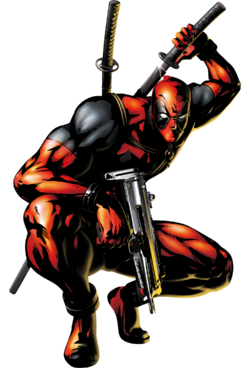

English:
Deadpool is a sassy assassin, neither good nor bad, trained in the skills of martial arts, swordsmanship and of course, dark humor.
Deadpool is a fictional character appearing in American comic books published by Marvel Comics.
Created by writer Fabian Nicieza and artist/writer Rob Liefeld, the character first appeared in
The New Mutants #98 (cover-dated February 1991). Initially Deadpool was depicted as a supervillain
when he made his first appearance in The New Mutants and later in issues of X-Force, but later evolved
into his more recognizable antiheroic persona. Deadpool, whose real name is Wade Winston Wilson,
is a disfigured mercenary with the superhuman ability of regeneration and physical prowess.
The character is known as the "Merc with a Mouth" because of his tendency to talk and joke constantly,
including breaking the fourth wall for humorous effect and running gags.
Spanish:
Deadpool es un asesino con actitud, ni bueno ni malo, entrenado en las habilidades de las artes marciales, manejo de la espada y, por supuesto, el humor negro.
Wade Winston Wilson, más conocido como Deadpool,5 (y en los comics editados en España por Panini Comics como Masacre)
es un personaje ficticio, mercenario, supervillano67 y antihéroe,8 que aparece en los cómics publicados por Marvel Comics.
Creado por el artista Rob Liefeld y el escritor Fabian Nicieza, Deadpool apareció por primera vez en New Mutants (vol. 1) #98 (1991).
Como un mercenario mentalmente inestable y desfigurado, Deadpool apareció originalmente como un villano en el cómic New Mutants,
y más tarde en ediciones de X-Force. Desde entonces, el personaje ha protagonizado varias series en curso,
y comparte títulos con otros personajes, como Cable. Conocido como el "Mercenario Bocón" ("Merc with a Mouth" en inglés;
"Mercenario Bocazas" en España), es famoso por su naturaleza comunicativa y por su tendencia a romper la cuarta pared,
un recurso utilizado por los escritores para un efecto humorístico. Su mayor enemigo es Taskmaster.
